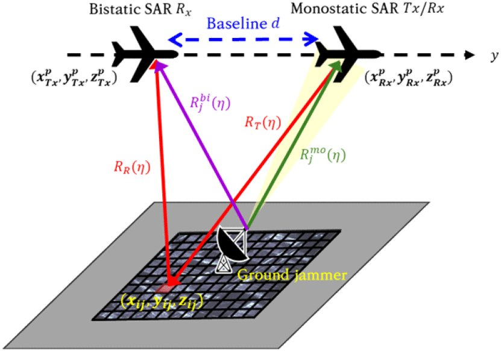

연구실적 · 국내전문학술지
바이스태틱 SAR에서의 재밍 신호 억제와 압축센싱 기반의 신호 복원 및 품질 개선
Compressive Sensing for Jamming Signal Suppression and Restoration in Bistatic SAR

초록
합성개구레이다(SAR, synthetic aperture radar)는 기상 상황과 관계없이 관측 영역의 영상정보를 획득할 수 있다는 장점이 있어 민간 분야와 군사 분야에서 널리 사용되고 있으나, 전파 간섭(재밍)으로 인해 영상 품질이 저하될 수 있다는 문제점을 가지고 있다. 최근 연구되고 있는 바이스태틱 SAR은 송/수신기가 독립적으로 운용되어 재밍 신호가 수신기에 도달하는 과정에서 경로가 다양하게 변하여 수신 과정에서 재밍 신호의 손실을 발생시킬 수 있다. 또한, 지상 재머가 수신기의 위치를 정확하게 파악하지 못해 모노스태틱 SAR에 비해 재밍 신호에 영향을 받는 신호가 감소할 수 있다. 본 논문에서는 바이스태틱 SAR 수신 신호의 특성을 활용하여 재밍 신호의 영향을 받은 신호를 제거한다. 재밍 신호 제거를 통해 재밍 신호의 영향을 억제하고 손실된 신호복원에 적용 가능한 압축센싱 기법을 통해 제거된 신호를 복원하는 방법을 제안하며, 모의실험을 통해 확인한다.
사이트 원문 표기
최민호 (Min-Ho Choi), 이희우 (Hee-Woo Lee), 최지훈 (Ji-Hoon Choi), 이우경 (Woo-Kyung Lee), “바이스태틱 SAR에서의 재밍 신호 억제와 압축센싱 기반의 신호 복원 및 품질 개선”, 한국전자파학회논문지, 제35권 11호, 2024년
BibTeX
@article{Choi_2024,
title={Compressive Sensing for Jamming Signal Suppression and Restoration in Bistatic SAR},
volume={35},
ISSN={2288-226X},
url={http://dx.doi.org/10.5515/kjkiees.2024.35.11.929},
DOI={10.5515/kjkiees.2024.35.11.929},
number={11},
journal={The Journal of Korean Institute of Electromagnetic Engineering and Science},
publisher={Korean Institute of Electromagnetic Engineering and Science},
author={Choi, Min-Ho and Lee, He-Woo and Choi, Ji-Hoon and Lee, Woo-Kyung},
year={2024},
month=Nov,
pages={929–942}
}